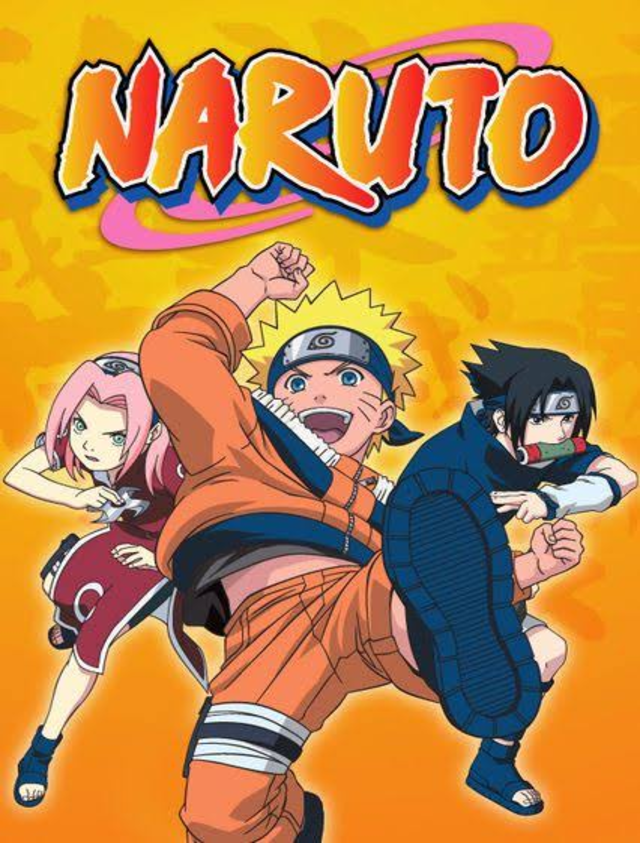

Naruto

Sinopse:
Anos atrás, a Vila Oculta da Folha foi quase destruída pelo ataque da Raposa de Nove Caudas, uma besta demoníaca de poder devastador. Para salvar seu povo, o líder da vila selou a criatura dentro de um recém-nascido: Naruto Uzumaki. Crescendo sozinho, rejeitado e temido pelos moradores que enxergam nele apenas a raposa, Naruto sonha em se tornar o próximo Hokage, o líder mais forte e respeitado da vila, para finalmente ser reconhecido por todos. Ao entrar para a academia ninja, ele forma a Equipe 7 ao lado da inteligente Sakura Haruno e do talentoso porém arrogante Sasuke Uchiha, sob a orientação do misterioso professor Kakashi Hatake. Juntos, eles enfrentam missões perigosas, rivais poderosos e organizações sombrias que ameaçam o equilíbrio entre as nações ninjas. Ao longo do caminho, Naruto descobre verdades dolorosas sobre seu passado, forma laços profundos de amizade e rivalidade, especialmente com Sasuke, e enfrenta inimigos cada vez mais fortes e perigosos enquanto treina para dominar seus poderes ninjas e controlar a força perigosa que carrega dentro de si. Uma jornada sobre superação, amizade e a determinação de um garoto solitário para provar seu verdadeiro valor e mudar o destino que os outros tentaram impor a ele.